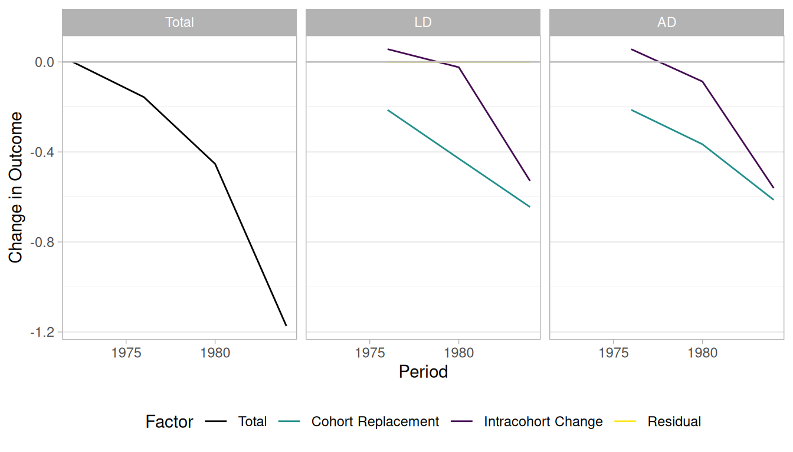

library("socialchange")
library("ggplot2")
library("data.table")
library("knitr")
options(digits = 3)Replications: Firebaugh
Overview of methods
The goal is to decompose total change into two components: intracohort change (IC) and cohort replacement (CR), ideally without a residual. The same methods are applied to GSS attitudes on homosexuality in the GSS homosexuality vignette.
This document contains analyses based on four methods:
- Algebraic decomposition (AD): The problem with the AD method concerns the “entering” and “exiting” cohorts. Because their values cannot be observed, it is unclear whether they contribute to IC or CR. Firebaugh assigns the change these cohorts contribute to CR, but notes this is “very problematic”.
- Linear decomposition (LD): Based on a linear model, and therefore cannot take into account non-linearities. Also produces a residual.
- AD+: A variation on the AD method that accounts for the entering and exiting cohorts by treating the problem as a missing data problem: the missing values for the entering/exiting cohort are replaced with modeled counterfactuals. This method should be strictly better than the AD method when the model fit is adequate.
- Model: Taking AD+ a step further: all cohort-specific values are replaced with modeled values. This serves as a form of regularization, which can be especially useful for small cohorts where the outcome is not precisely estimated.
Additionally, there is the question of whether to decompose over a long period or year-by-year. When the data is available, year-by-year decomposition has an obvious advantage because more data is used. This applies to all four methods.
Racial attitude data
Replication of Firebaugh (1989)
This is (roughly) the data analysed in Firebaugh (1989) and Firebaugh and Davis (1988).
# cr_ic requires a formula outcome ~ period + cohort
# it automatically decomposes the maximum time span available in the data
gss_rac_subset <- subset(gss_rac, year %in% c(1972, 1984))
results1 <- cr_ic(gss_rac_subset, rac ~ year + cohort, weight = "wtssall")
# compare these results to Firebaugh (1989), Table 1:
firebaugh <- data.table(
group = c("AD", "AD", "AD", "AD", "LD", "LD", "LD", "LD"),
factor = rep(c("total", "IC", "CR", "resid"), 2),
firebaugh = c(-1.224, -.510, -.714, 0, -1.185, -.548, -.637, -.039))
kable(merge(results1$summary, firebaugh,
all.x = TRUE, sort = FALSE)[, -c("pct_explained")])| group | factor | value | firebaugh |
|---|---|---|---|
| Outcome | 1972 | 6.380 | NA |
| Outcome | 1984 | 5.207 | NA |
| Difference | total | -1.173 | NA |
| LD | total | -1.173 | -1.185 |
| LD | IC | -0.525 | -0.548 |
| LD | CR | -0.649 | -0.637 |
| LD | resid | 0.000 | -0.039 |
| AD | total | -1.173 | -1.224 |
| AD | IC | -0.511 | -0.510 |
| AD | CR | -0.662 | -0.714 |
| AD | resid | 0.000 | 0.000 |
The numbers are close to those reported by Firebaugh, though not an exact match, which may reflect differences in the sample. For this two-point comparison, LD and AD give essentially the same answer.
The cr_ic_decomposition object provides a useful summary:
results1
#> Cohort decomposition (year-over-year) with 2 periods:
#> 1972, 1984
#>
#> Summary for entire period:
#> 1972 1984 Difference
#> <num> <num> <num>
#> 6.38 5.21 -1.17
#>
#> Decompositions:
#> method factor value %
#> <char> <char> <num> <num>
#> LD total -1.173 100.0
#> LD IC -0.525 44.7
#> LD CR -0.649 55.3
#> LD resid 0.000 NA
#> AD total -1.173 100.0
#> AD IC -0.511 43.6
#> AD CR -0.662 56.4
#> AD resid 0.000 NAUsing only two time points, intracohort change accounts for 45% of the decline according to LD and 44% according to algebraic decomposition.
As an alternative, the decomposition can be computed year-over-year, making use of all available data:
results2 <- cr_ic(gss_rac, rac ~ year + cohort, weight = "wtssall")
results2
#> Cohort decomposition (year-over-year) with 4 periods:
#> 1972, 1976, 1980, 1984
#>
#> Summary for entire period:
#> 1972 1984 Difference
#> <num> <num> <num>
#> 6.38 5.21 -1.17
#>
#> Decompositions:
#> method factor value %
#> <char> <char> <num> <num>
#> LD total -1.173 100.0
#> LD IC -0.529 45.1
#> LD CR -0.645 54.9
#> LD resid 0.000 NA
#> AD total -1.173 100.0
#> AD IC -0.560 47.8
#> AD CR -0.613 52.2
#> AD resid 0.000 NAThe LD results are largely unaffected, while AD now attributes 48% of the change to intracohort change — not a large difference.
The package provides a plot method that shows cumulative IC and CR contributions over time:
plot(results2)
New methods
The AD+ and Model methods require a model formula to produce counterfactual values. Here, dummy variables for every year and cohort are used, but simpler models (e.g., using splines) are also possible.
# define a formula here for the model-based methods
form <- rac ~ as.factor(year) + as.factor(cohort)
cr_ic(gss_rac_subset, rac ~ year + cohort, weight = "wtssall", model = form)
#> Cohort decomposition (year-over-year) with 2 periods:
#> 1972, 1984
#>
#> Summary for entire period:
#> 1972 1984 Difference
#> <num> <num> <num>
#> 6.38 5.21 -1.17
#>
#> Decompositions:
#> method factor value %
#> <char> <char> <num> <num>
#> LD total -1.173 100.0
#> LD IC -0.525 44.7
#> LD CR -0.649 55.3
#> LD resid 0.000 NA
#> AD total -1.173 100.0
#> AD IC -0.511 43.6
#> AD CR -0.662 56.4
#> AD resid 0.000 NA
#> AD+ total -1.173 100.0
#> AD+ IC -0.604 51.5
#> AD+ CR -0.569 48.5
#> AD+ resid 0.000 NA
#> Model total -1.173 100.0
#> Model IC -0.601 51.3
#> Model CR -0.572 48.7
#> Model resid 0.000 NAThese results apply to the two-time-point dataset. Both new methods suggest IC > CR.
Now using all available data:
(res <- cr_ic(gss_rac, rac ~ year + cohort, weight = "wtssall", model = form))
#> Cohort decomposition (year-over-year) with 4 periods:
#> 1972, 1976, 1980, 1984
#>
#> Summary for entire period:
#> 1972 1984 Difference
#> <num> <num> <num>
#> 6.38 5.21 -1.17
#>
#> Decompositions:
#> method factor value %
#> <char> <char> <num> <num>
#> LD total -1.173 100.0
#> LD IC -0.529 45.1
#> LD CR -0.645 54.9
#> LD resid 0.000 NA
#> AD total -1.173 100.0
#> AD IC -0.560 47.8
#> AD CR -0.613 52.2
#> AD resid 0.000 NA
#> AD+ total -1.173 100.0
#> AD+ IC -0.569 48.5
#> AD+ CR -0.605 51.5
#> AD+ resid 0.000 NA
#> Model total -1.173 100.0
#> Model IC -0.588 50.1
#> Model CR -0.585 49.9
#> Model resid 0.000 NAThe IC component is larger for these methods than for AD and LD, but the overall conclusion does not change substantially.
The CR-IC decompositions here work from aggregated cohort-level data. For a more granular approach that directly tracks demographic events (mortality, coming-of-age) and allows state transitions, see the simulation and aggregated decomposition vignettes.